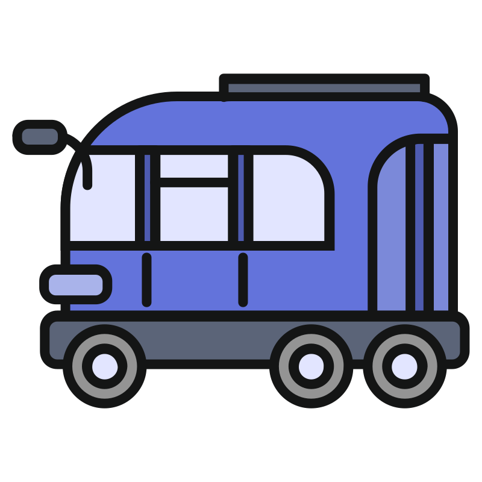

Speed, Time and Distance
A bus has a running speed of
54 km/hr
and stops for
8 minutes
in every hour. What is its average speed including stops?
Q
STOP
54 km/hr
Stopped

Stop · 8 min
Given
Running Speed =
54 km/hr
Stop Time =
8 min
every hour
Bus runs at
54 km/hr
, stops
8 min
every hour. Average speed?
Speed =
54 km/hr
· Stop =
8 min/hr
Step 1
Every hour: 60 min −
8 min
stop
=
52 min
running
Step 2
Distance = Speed × Time
Speed =
54 km/hr
Time =
52
60
hr
54
×
52
60
=
46.8 km
Step 3
In this
1 hr
(with the stop):
Distance =
46.8 km
Since Time = 1 hour:
Average Speed =
46.8 km/hr
G
Running Speed =
54 km/hr
Stop Time =
8 min
every hour
1
Running time = 60 − 8
=
52 min
2
Distance = 54 ×
52
60
=
46.8 km
3
Time = 1 hr, so
Avg Speed =
46.8 km/hr
A
45 km/hr
B
48 km/hr
C
50 km/hr
D
46.8 km/hr